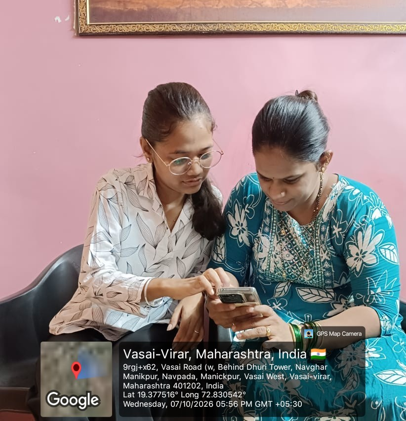
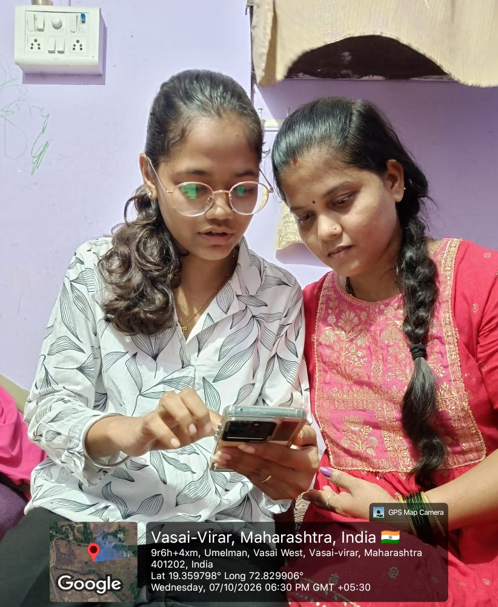
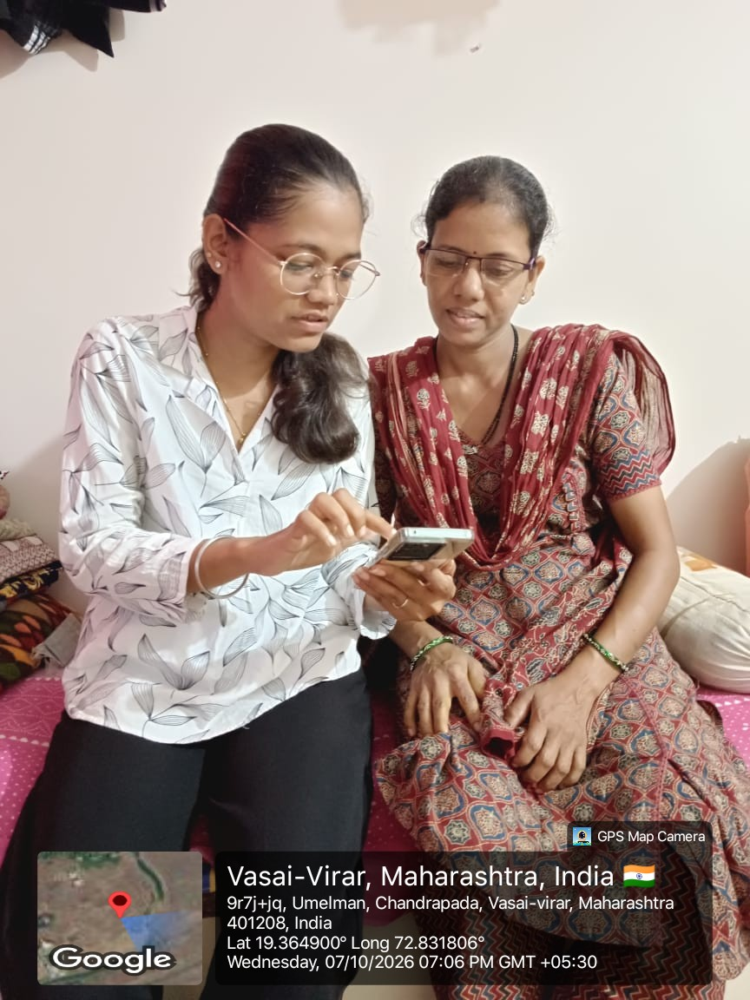
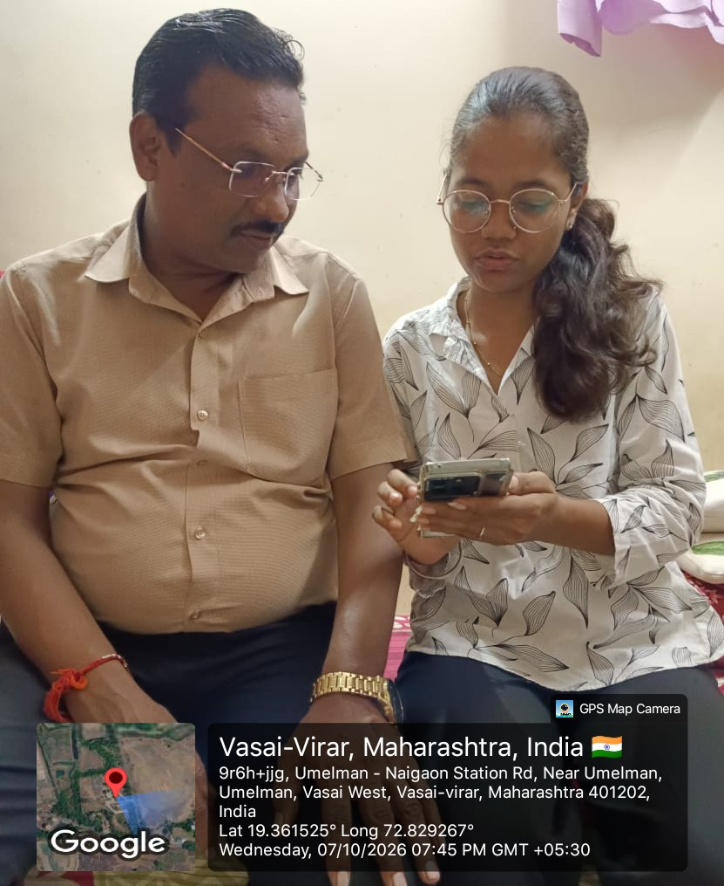

DigiLocker Awareness and Training
Participant were introduced to DigiLocker and guided through the platform to understand how eligible digital documents can be accessed. The session also covered the importance of keeping account information secure.

Aadhaar Services Awareness
The training introduced participants to the official UIDAI website and available Aadhaar-related online services. Guidance was provided on identifying official services and protecting personal information.

PAN Services Awareness
Participant were guided on how to locate official PAN-related online services and understand their purpose. The session highlighted the importance of using trusted websites when accessing PAN services.

Online Safety and Fraud Awareness
Participant learned basic online safety practices, including avoiding suspicious links, protecting OTPs and passwords, identifying potentially fraudulent messages, and using official reporting channels.